Июнь 2026
ПнВтСрЧтПтСбВс123456789101112131415161718192021222324252627282930
Выплата заработной платы
ТипПлатеж🔔
УчастникБухгалтер
Срок1 число (ежемесячно)
Российский сервис для прозрачных и управляемых
рабочих процессов

Kaiten представлен на рынке с 2014 года. Сервис работает на собственной инфраструктуре в России и не зависит от иностранных поставщиков — для банка это предсказуемая поддержка и понятная юрисдикция данных
Российское юридическое лицо ООО «КАЙТЕН СОФТВЕР»
Входит в реестр аккредитованных IT-компаний РФ и имеет сертификаты безопасности Минцифры
Внесен в Единый реестр российского ПО
Создан на открытом и собственном коде, не зависит от иностранных поставщиков
Kaiten работает на российских операционных системах семейства Linux «РЕД ОС» и «РОСА» — переход не требует замены парка рабочих станций банка
Кайтен включен в Единый реестр российских программ для ЭВМ и баз данных.
ПО отвечает требованиям безопасности компаний, нормативам защиты данных и корпоративным политикам
Реестровая запись №14347
ООО «Кайтен Софтвер» аккредитовано как ИТ-организация, осуществляющая деятельность в сфере разработки и сопровождения программного обеспечения
Разместите Kaiten в закрытом контуре банка: данные о клиентах, сделках и внутренних процессах не покидают вашу инфраструктуру
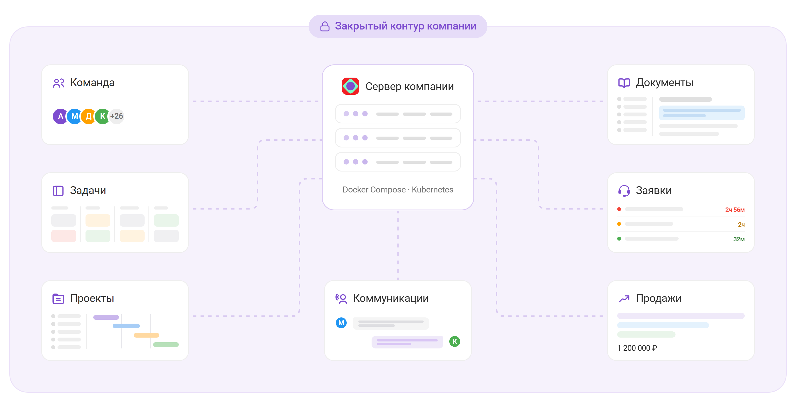
Нам доверяют организацию рабочих процессов банки, страховые и платежные компании, а также крупные бизнесы других направлений. Требования к безопасности и объему данных у них сопоставимы с банковскими
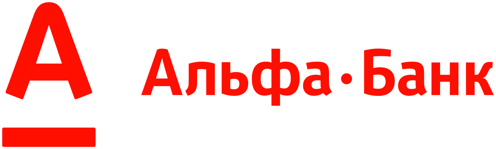
банк
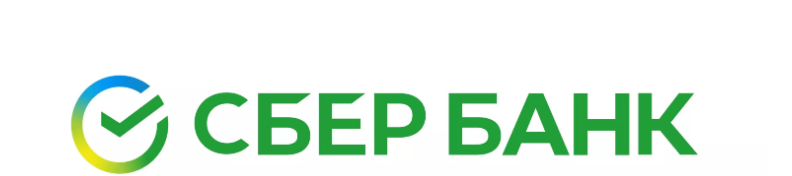
банк
страхование

платежное и кассовое ПО
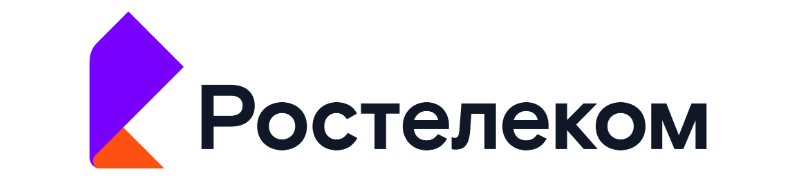
оператор связи

оператор связи
государственная компания
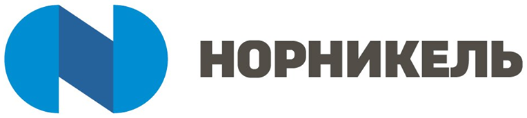
промышленность
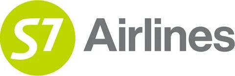
авиакомпания

IT-компания
застройщик
торговая компания
Разложите сложный процесс на простые этапы и следите за статусом каждой задачи: от заявки клиента до решения кредитного комитета. Назначайте исполнителей, ставьте сроки и получайте уведомления о дедлайнах и смене статусов
Колонки обозначают этапы работ
Указаны ответственные
Метки и визуальные сигналы выделяют продукт, сегмент клиента и приоритет
Видно срок по каждой заявке
В карточке собраны данные по задаче: описание, исполнитель, сроки
По каждой карточке виден прогресс
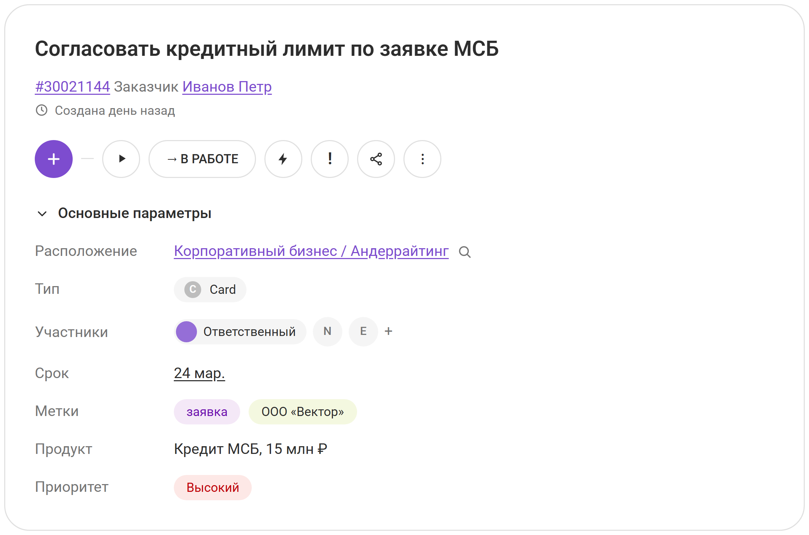
Карточка задачи заменяет переписку по почте и в мессенджерах: этапы работы, документы клиента, согласования и обсуждения хранятся в одном месте и остаются в контуре банка
Исполнителя и заказчика
Срок по заявке
Метки и теги
Документы клиента и вложения
Ссылки на записи в смежных системах
Встроенный таймер
Кастомные поля под продукты банка
Чек-листы проверок
Чат с обсуждением
Контакты клиента и связанные задачи
Проверка контрагента по заявке на кредит
#30022876 Заказчик Смирнова Ольга, перемещена 2 часа назад
Описание
Подготовить заключение о финансовом состоянии заемщика для кредитного комитета.
Файлы
Этапы работы
Связи
Родительские карточки
Руководитель видит верхнеуровневые задачи всех подразделений, не погружаясь в рутину
Добавляйте доски розницы, корпоративного блока и ИТ в менеджерское пространство
Ставьте задачи конкретным сотрудникам или их группам
Наблюдайте за состоянием задач по статусам: в процессе, готово, отмена
Запуск продукта, миграция систем, открытие сети отделений — крупные программы видно целиком, без выгрузок в таблицы
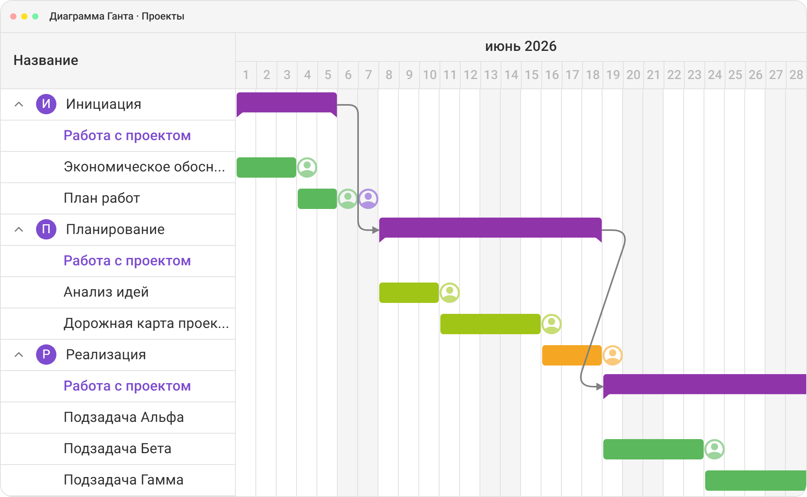
Ресурсное планирование показывает, кто чем занят в ближайшие недели. Руководитель видит перегрузки до того, как проект встанет
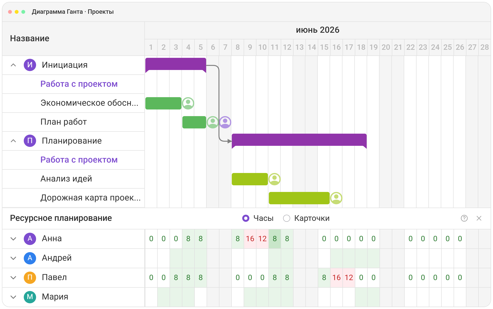
ИТ-блок банка ведет циклы разработки цифровых продуктов в том же сервисе, где работают бизнес-подразделения. Готовые шаблоны досок, WIP-лимиты, спринты и отчеты по ним
Спринт целиком помещается на экран
Разделение потока по продуктам и командам
Успевает ли команда к цели спринта
Сколько работы команда закрывает за спринт
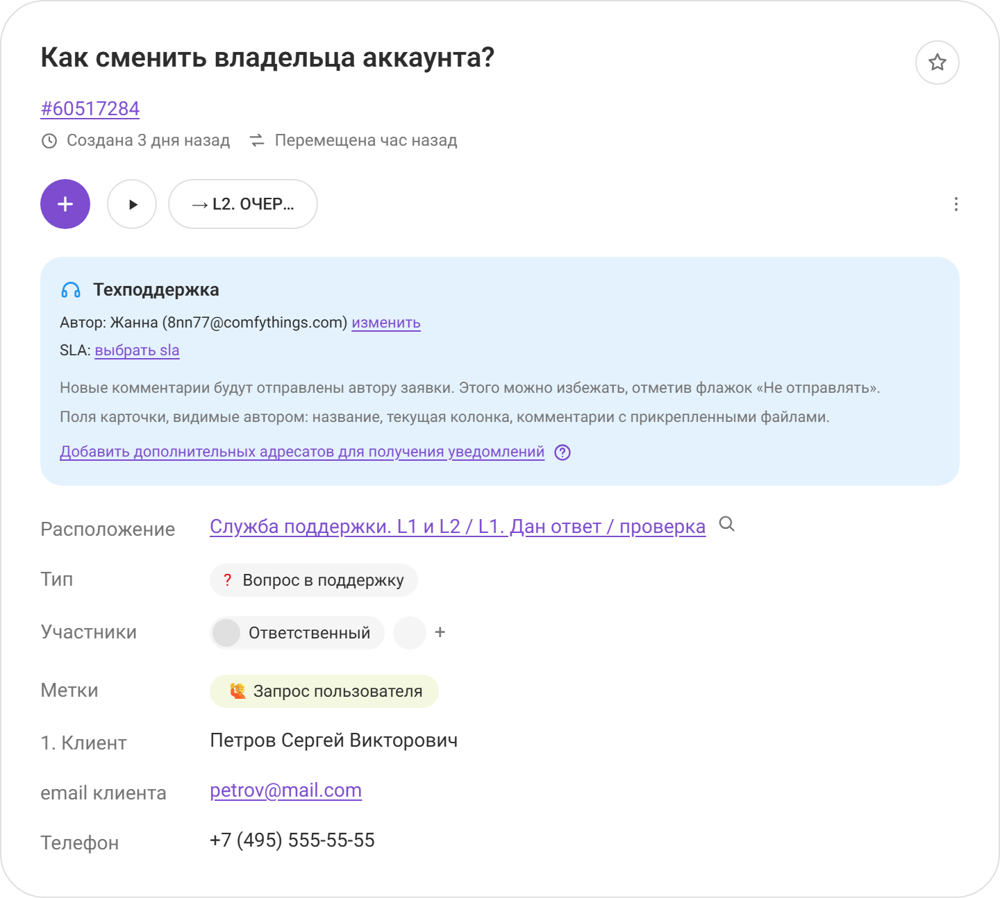
Встроенные отчеты показывают, где процесс встает и сколько времени занимает каждый этап.
Данные собираются автоматически, отдельная выгрузка для этого не нужна
Настраивайте выборку гибкой системой фильтров, выгружайте отчеты в XLSX и PDF или отдавайте данные в BI-систему банка по API
| Название | Доска | Взята в работу | Выполнена | Сумма |
|---|---|---|---|---|
| Заключение по заемщику | Кредитование МСБ | 15.02.2026 17:28 | 15.02.2026 17:28 | 4ч 49м |
| Проверка контрагента | Комплаенс | 11.07.2026 16:29 | 18.07.2026 14:57 | 1ч 4м |
| Расчет резерва | Риски (портфель МСБ) | 10.03.2026 16:41 | 26.09.2026 4:28 | 4ч 18м |
| Согласование лимита | Кредитный комитет | 09.06.2026 4:32 | 16.08.2026 15:29 | 9ч 48м |
| Открытие счета клиенту | Розница | 11.07.2026 12:56 | 11.07.2026 22:05 | 15м |
| Отчет по портфелю | Финансы и отчетность | 11.07.2026 22:12 | 12.07.2026 19:52 | 1ч 35м |
| Зарплатный проект | Корпоративный бизнес | 31.05.2026 13:36 | 4ч 15м | |
| Обновление тарифов | Продукты и тарифы | 11.07.2026 22:06 | 17.07.2026 23:28 | 2ч |
| Ответ клиенту | Служба поддержки | 19.07.2026 5:23 | 19.07.2026 5:28 | 10м |
Суммарное время 35ч 3м
Модули подключаются по мере надобности — банк платит за то, чем пользуется
Канбан-графики и отчеты, детальная визуализация процессов, WIP-лимиты
Таймер для учета времени работы с задачами, отчеты по загрузке сотрудников
Скрам-отчеты и графики, запуск спринтов, инструменты для визуализации
Объединение пользователей в группы, настройка доступов для крупных команд
Строгий контроль над операциями сотрудников с задачами
Инструмент для создания карты пользовательских историй
Прием обращений от пользователей, у которых нет доступа к доскам
Диаграмма Ганта, распределение ресурсов, планирование трудозатрат
Правила на досках и запланированные задания снимают с сотрудников повторяющиеся действия
Новые модули в активной разработке
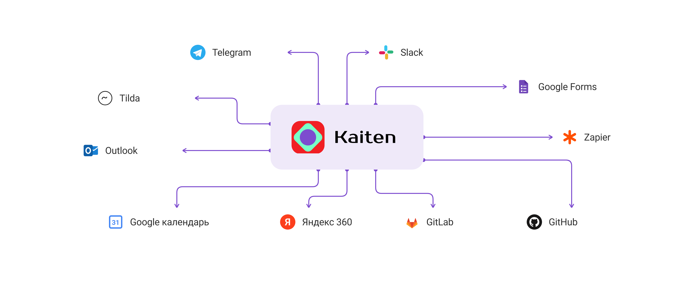
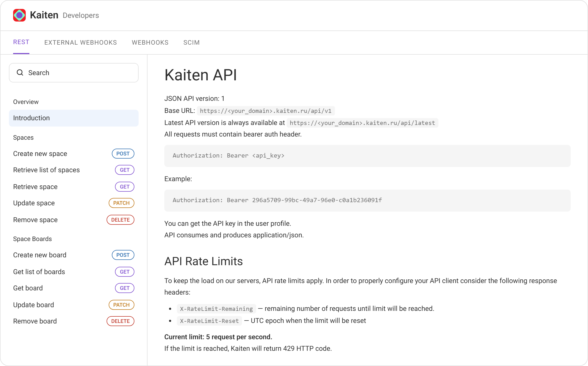
Быстрый перенос данных без сложных алгоритмов и разработчиков
Уникальный рабочий процесс крупного банка требует индивидуального подхода. Kaiten дорабатывает функции и настраивает сервис под задачи вашего бизнеса
Разбираем процессы подразделений и собираем схему внедрения
Настраиваем доски, роли и права под структуру банка
Дорабатываем функции под регламенты и отчетность
Сопровождаем внедрение и обучаем команды
Регламенты и порядок согласований
Структура подразделений и роли
Формы отчетности и показатели
Настраиваем и дорабатываем платформу
Рабочее пространство под процесс банка
Сотрудники работают в привычных терминах, без переучивания
Работайте над задачами и документами с телефона в режиме реального времени
Создавайте карточки и комментируйте задачи в Телеграме и Slack
Получайте уведомления о событиях, чтобы быстро реагировать на изменения
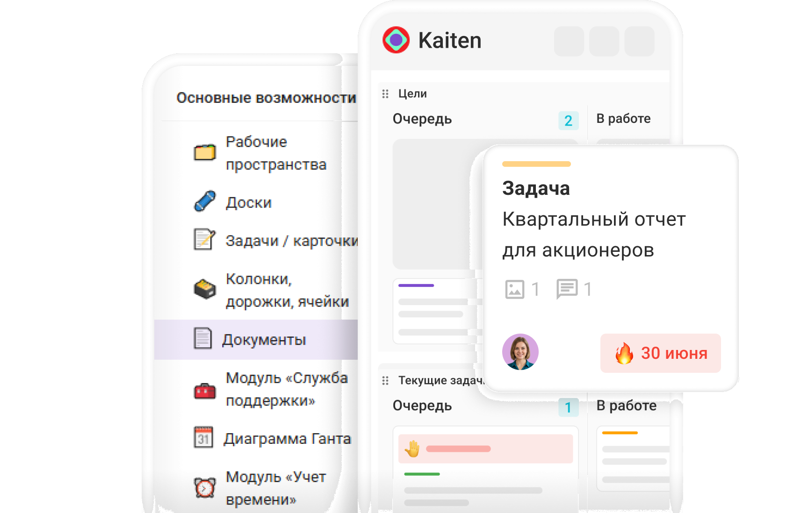
Все задачи, статусы, документы
и обсуждения в вашем телефоне
Розничный бизнес
Корпоративный бизнес
Кредитование
Комплаенс и риски
ИТ и разработка
Кадры
Кредит МСБ № 4412
Ипотека № 2201
Овердрафт для торговой сети
Банковская гарантия по 44-ФЗ
Зарплатный проект
Кредит МСБ № 4390
В один клик настраивайте интерфейс под привычный формат работы: канбан-доски, списки, таблицы, timeline, календарь, отчеты
Структурируйте информацию и скачивайте ее в виде таблицы формата XLSX
Создавайте временные отрезки для задач, визуализируйте сроки и отмечайте взаимосвязи
Планируйте задачи с конкретными датами: платежи, отчетность, заседания комитетов
Кредитный конвейер
Открытие счетов и онбординг клиентов
Комплаенс и проверка контрагентов
Разработка цифровых продуктов
Договоры и закупки
Маркетинг и продуктовые кампании
Подбор и адаптация сотрудников
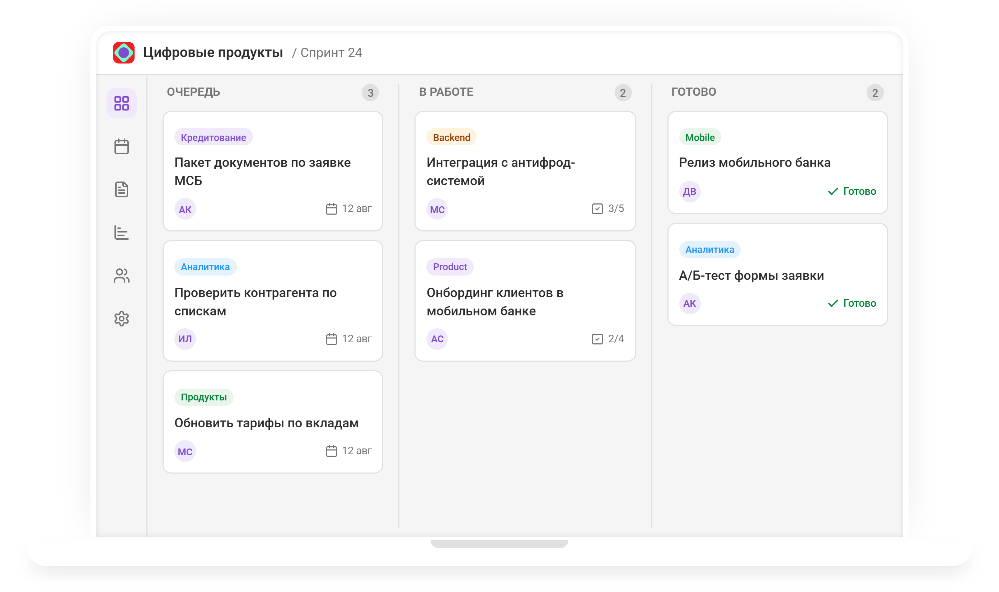
Объединяйте сотрудников в группы по подразделениям, продуктам или проектам. Права выдаются группе, а не человеку, поэтому доступ к банковской тайне остается в рамках служебных полномочий
Подключайте новых сотрудников ко всем нужным пространствам сразу группой
Синхронизируйте состав групп с корпоративной директорией банка
Открывайте данные клиентов только тем, кому они нужны по роли
При увольнении сотрудника доступы закрываются одним действием
Все сотрудники банка входят в эту группу
Отсутствует доступ к административным разделам и функциям
Пространства: Work
Административный раздел «Метки», Административный раздел «Типы карточек», Административный раздел «Учет времени», Административный раздел «Пользователи», Dump action (API), Приглашение пользователей на пространства
Пространства: Розница, Кредитование, Разработка
Отсутствует доступ к административным разделам и функциям
Пространства: Разработка
Пользовательское поле «Формулы» автоматизирует повторяющиеся вычисления: расчет лимита, резерва или эффективной ставки не приходится вести в отдельной таблице
Напишите в поле формулу
Подставьте в нее значения полей, которые участвуют в вычислении, и получите ответ
Если значения в карточке изменятся, результат пересчитается автоматически
Числовые поля разных карточек суммируются в таблицах. Так собирается, например, портфель по всем заявкам отделения за месяц
Создать поле
Показывать на фасаде карточек
Например, prop("Prop name") * prop("goals_done") − 1/2
Тестовый результат: неизвестен
ДОБАВИТЬ
Справочник — это учет данных о клиентах, продуктах и партнерах банка. Выносите нужные поля на фасад карточки, чтобы менеджер видел сегмент, лимит и статус проверки без перехода в смежные системы. Настраивайте фильтры и делайте выборку по региону, виду деятельности и другим признакам
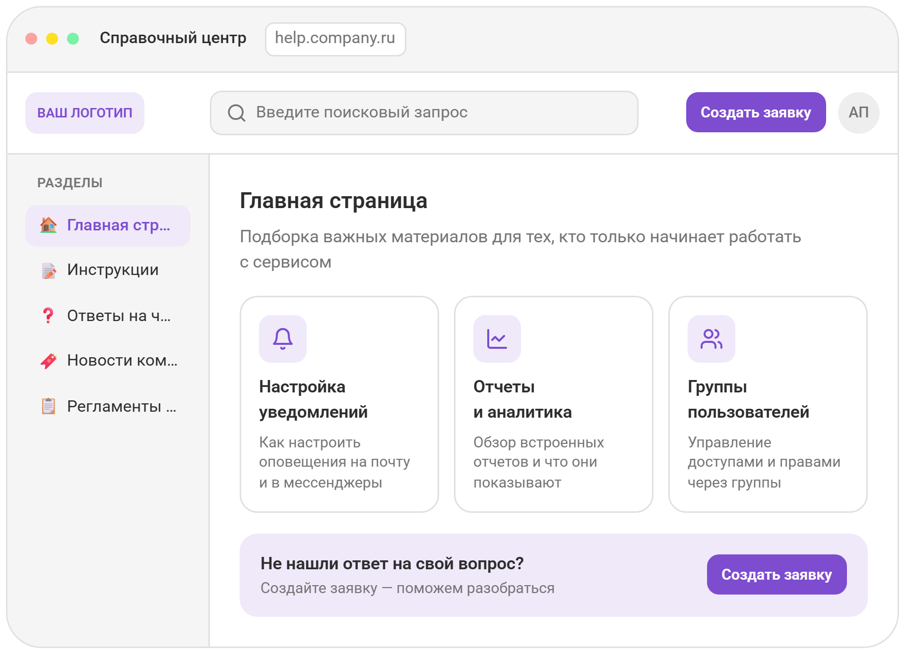
Надежность
Kaiten входит в реестр аккредитованных IT-компаний РФ и Единый реестр российского ПО
Безопасность
Коробочная версия ставится в контур банка, облачные серверы находятся в России и имеют степень защиты Tier 3
Коммуникации
Обсуждение идет внутри задачи, а не в сторонних мессенджерах — переписка по клиенту остается в контуре
Меньше рутины
Автоматизации и формулы снимают повторяющиеся действия и ручные расчеты
Масштаб
Группы пользователей, детальные права и синхронизация с директорией держат тысячи сотрудников в одном сервисе
Удобство
Низкий порог входа: чтобы начать работать в Kaiten, отдельное обучение не нужно
Единая рабочая среда
для всей компании
Профессиональный инструмент для прозрачных и управляемых рабочих процессов
Остались вопросы?
Напишите нам на почту
или свяжитесь по телефону